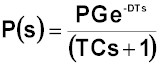
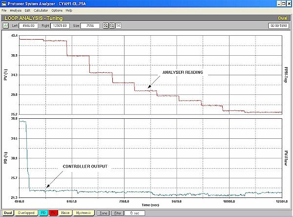
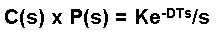
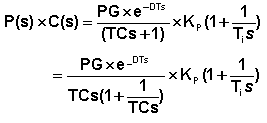
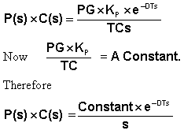

|
| [Home] [About us] [Contact us] [Training] [Optimisation services] [Protuner] |
| [Loop signatures] [Case histories] [Continuous loop performance monitoring] |
|
Loop Problem Signatures Part 2 9. DYNAMICS OF SIMPLER PROCESSES First order lag, deadtime, self-regulating process In the previous two articles in this series, Bode open and closed loop gain plots for a simple first order lag, deadtime, self-regulating process were shown. The transfer function of such a process is:  It was shown in Loop Signature 24 in the Part 1 Loop Signature series available on my "Basic Trouble Shooting and Loop Tuning" CD, that most of the "SWAG" tuning methods could give some tuning rules for these processes, provided that the deadtime was less then the lag. The relationship of DT/TC is very important. It has been referred to as the "Controllability Factor", which is a good description in my opinion. As the ratio gets larger, i.e. the DT gets bigger than the TC, the control becomes more difficult, and as it gets smaller, the control gets easier. When the DT is equal or greater than the TC the process is said to be deadtime dominant. To illustrate how useful apparently relatively insignificant information like this can be, this fact was of great use to me some years ago. A plant reclaiming gold from old dumps was having trouble with the control of their cyanide addition. The cyanide was very expensive and the mine was using excessive amounts to ensure they recovered all the gold. The actual cyanide cost was millions of Rands per month. The problem with the control was that the cyanide analyser was an on-line titration type that could only give updated readings once every 14 minutes. Like most people would, the plant personnel immediately assumed that feedback control couldn't be used when a measuring instrument only gives 4 readings per hour. The mine's metallurgists had then came up with an alternative control scheme which was basically a type of primitive feedforward system. The total mass flow of slurries into the plant was measured, and a complicated calculation was performed in the PLC which took various laboratory inputs into account, including factors like cyanide efficiency, the average amount of residual cyanide already in the slurries, and so on. Important factors like the process dynamics (which as will be seen later, were extremely slow, with a long deadtime and a huge lag) were not taken into account. The output of the calculation was then fed directly to the cyanide addition valve. A manual bias was added after the calculation block to allow the operator to make corrections. The system did not work at all well. Firstly it is almost impossible for an operator to try and anticipate with any great success what the final result will be when he makes an adjustment on a system subject to frequent load changes and dynamics that are measured in terms of hours as opposed to seconds or even minutes. Secondly no one was aware that the very cheap cyanide control valve they had installed had a massive 35% hysteresis on it. (In other words if the operator needed to make an adjustment that involved reversing the valve, then he would need to move the controller's output through 35% in the reverse direction before the valve would even start moving again). As a result of this, the plant ended up having to massively overdose the cyanide to ensure that no gold was lost. This cost them many millions a year. The plant personnel then requested the control department at a local university to advise on a suitable control system. The departmental head assigned a PhD student to the project who studied and modelled the plant over a period of several months. He then came up with a proposed control system, which would have cost the mine over R150,000 to implement. One of the problems with it was that the whole proposal was so mathematically intensive that nobody in the plant could really understand it. The final straw in the proposal was that the student was leaving for overseas after completing his PhD, and the C&I department in the plant were very nervous that they would be left without support with trying to get the system to work. I was then called in. After sorting out the cyanide valve problem by installing a cascade flow system until a new valve could be obtained, an open loop test was performed on the system to establish the process dynamics . This consisted of keeping the feed to the plant as constant as possible over several hours, and making a step change in cyanide addition. The test is shown in Figure 1. If one remembers that everything outside of the controller must be regarded as part of the process, the fact the major deadtime contribution comes from the measuring element in the loop is not important. The total deadtime in the loop consisting of both process and measuring element deadtimes, can be treated as just one of the various dynamic factors that must be taken into account when performing tuning.  Figure 1 By drawing a best-fit line through the steps in analyser output (whilst ensuring that the maximum deadtime was picked up), it was easily established that the dynamics were those of a simple first order lag, deadtime, self -regulating process. The total deadtime was about 23 minutes, and the time constant was about 39 minutes. This gives the ratio DT/TC much smaller than unity, which means that control is easy. Thus it was easy to confidently propose that a simple feedforward system be introduced in parallel to a slightly more sophisticated feedforward system that not only used the existing calculation block, but that also incorporated proper feedforward dynamic compensation. The system worked extremely well and is still helping the plant save many millions a year. All this from merely knowing simple facts like the controllability factor, and realising that a dynamic like deadtime can be coming from any component in the loop. As I always tell delegates on my courses: "Knowledge is power". Tuning this type of process where the controllability factor is less than one In the previous few Loop Signature articles the Bode open and closed loop plots were discussed, and it was shown that for this simple type of process one needs to use the I (integral) term to straighten out the open loop gain plot to produce a combined plot which should be that of a perfect integrator (like a simple open loop level process).  The D term cannot be used, as it would bend up the right hand side of the plot, which already ends up at the correct slope of –20db/decade. Once the plot is straightened out the P term is used to adjust the vertical position of the combined plot to allow sufficient gain and phase margins. What value of I is needed to straighten the plot? The equation of a feedback loop in automatic is the product of the process' transfer function and the controller's transfer function. Using a series or ideal controller algorithm, this is:  If we set TC = Ti , the terms in the brackets in the numerator and in the denominator cancel each other out, which leaves:  This function is that of a perfect integrator Thus setting the I term equal to the process time constant cancels out the poles and gives a perfect straight line sloping downwards from left to right in the closed loop plot. Once we have got this then as mentioned above the requisite gain and phase margins can be determined by adjusting the proportional gain, Kp. This is of great importance and leads to the basic tuning rules for simple self-regulating processes as follows: Set the integral equal to the dominant time constant of the process, and then adjust the proportional gain (by trial and error if necessary) to get the desired response. Purely out of interest this applies to a certain extent to all self-regulating processes, even with different and more complex dynamics, insomuch that once the integral term is determined (and in certain cases the derivative term as well), then the further the adjustment that is required to get the desired response, is the proportional term. This of course also assumes that a controller with an ideal or series algorithm is being used, and is a good example again of why parallel controller algorithms should not be used, as the P term interacts with the other two terms, and all three must be adjusted simultaneously. The next articles in this series will deal with the case where the controllability factor becomes very large, i.e. the process becomes very deadtime dominant. Michael
Brown is a specialist in control loop optimisation, with many years of
experience in process control instrumentation. His main activities are
consulting, and teaching practical control loop analysis and
optimisation. He gives training courses which can be held in clients'
plants, where students can have the added benefit of practising on live
loops. His work takes him to plants all over South Africa, and also to
other countries. He can be contacted at:
|